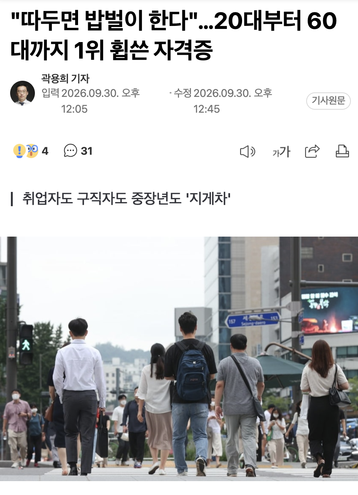
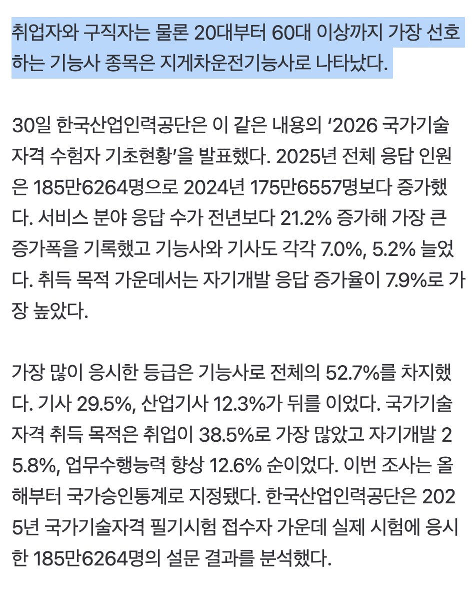
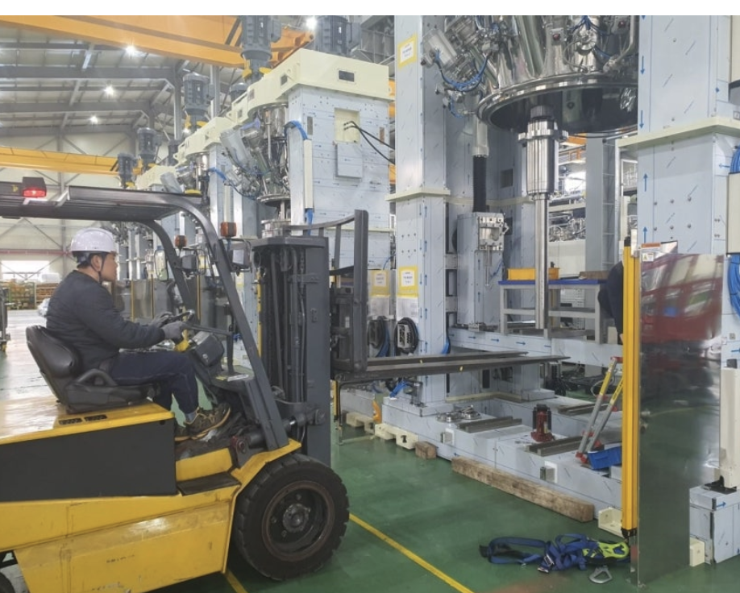
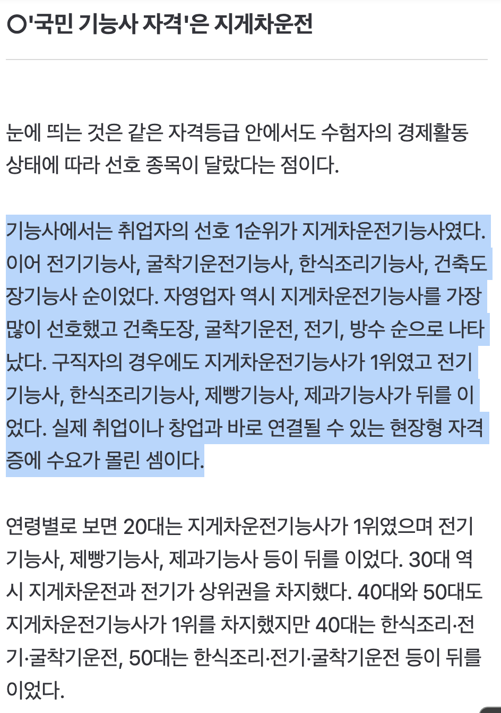

https://n.news.naver.com/article/015/0005337567?cds=news_media_pc




https://n.news.naver.com/article/015/0005337567?cds=news_media_pc
지게차도 로봇이 가져갔음
절망
ㄹㅇ 마트 에서도 대우가 달라짐
동네 하나로마트 같이 작은 경우에만 유리하고
대형마트는 해당 안 됨
아버지 지게차에 타세요
까짓껏 한번 타보지
공조냉동이 따긴 어려워도 취업은 쉬움. 일도 안어렵고 돈도 잘벌고
다만 지방생활+야간당직만 버틸 수 있다면
밥벌이 못함
제일 만만한 자격증 중에 하나라서 이력서에 한줄 채워넣기 좋을뿐임
지게차 운전은 소위 개나소나 할줄 암.
그리고 몇톤 이하였더라? 도로 주행만 안하면 자격증도 필요 없다는 말이 있었는데
요즘은 또 어떻게 바뀐건지 모름.
계약직이 많고 쉽게 대체 가능해서 월급도 거의 고정임.
짬밥 차서 돈 많이 줘야 할 것 같으면 짜르고 딴사람 쓰면 그만임.
돈 많이주나 적게주나 하는 일은 똑같음.
그리고 지게차는 운전만 한다고 착각들을 많이 하는데 상하차도 겸업해야 됨.
물류 창고 관리, 입출고 관리 다 해야 할수도 있음.
지게차 뽑는다고 가면 인수인계하는 사람들이 상하차 하면서 허리다치고 퇴사한다고 하는 거 많이 봄.
상하차 안하고 지게차만 하는 곳은 잘 없고 노가다판에서 쓰는 대형 건설 지게차 같은건
인맥 없으면 들어가기 힘듬.
지게차로 ATM기 뽑으러 가야겠네
3.5톤 이하. 공도주행 아니면 자격증 필요 없음
지게차가 따기 ㅈㄴ 쉬워서 그럼 근데 범용성이 ㅈㄴ 크지 물류/유통이면 다 쓰니까
근데 지게차 딸랑 하나 가지고 취업하려고 하면 조건이 개씹창임
지게차만 타고 싶어서 갔는데 1년 까대기만 하는 경우가 대부분 아니면 리치(입식지게차) 타는데 존나 바빠서 물건 계속 넘어가는 현장인데 주6일 막 이럼 ㅋㅋ
ㄹㅇ 마트 물류알바 원툴
나는 물류운송 자격증 지게차,크레인 두개 있지에~
지금회사 퇴사해도 먹고 살아남겠다.
지게차딸걸 왜 굴삭기딴거야 젠장
더 간지나잖아~
지방 산단 좆소공장들 정문 박살내고 취업하려묜 지게차, 1종보통은 있어야지 ㅋㅋㅋ
지게차 우습게보는데 완전 살인기계임 조종수도 존나 죽고 주변사람도 존나 죽임 팔자꼬이기 가장 쉬운 방법임 그리고 지게차 자격가진채로 모는 경우는 1/3도 안될걸? 자격있다고 뽑고 그런게 아님 몰줄 아느냐를 더 중요하게 본다 지게차랑 소형크레인은 좆소의 기본소양이기 때문에
기업이 선호하는 자격증을 알아야하는거 아니냐
지게차는 굶어죽진 않으니까 ㅋㅋ덕분에 항만에서 리치스태커 타면서 밥벌이함
몇 년마다 갱신만 잘 하면
저 높은 점유율의 이유중 하나가 진짜 지게차로 밥벌이 할려고 따는거보다
지게차기능사가 유튜브만 보고 따라하거나 운전학원 가듯이 학원비 한번만 내면 바로 취득가능한 수준의 난이도 최하급이라 스펙용으로 하나라도 더 따는거임
고초대졸 대기업 현장직 노리는 애들이 자소서 1줄 추가용으로 기본으로 취득하고 보는 자격증임
근데 지게차도 수명 얼마 안남은거 같은데
창고직 해보면 알겠지만 여기서 로봇 대체설은 확실히 개소리임.
단순 파레트 단위 3pl은 대체 가능하긴 할듯.
지게차 일을 비하하는건 아님을 전제로
로봇이나 ai가 지게차의 현장일도 못하면 로봇 산업의 시장성, 확장성은 없을거 같은데
이것보다 더 디테일하고 난이도 높은 일도 해야 산업으로 발전할수 있을거 아냐
지게차가 단순이 물건을 나르는 게 끝이 아니라서 그래
현장을 경험해본 사람이랑 너랑 경험이 다름
로케이션 잡고 입고 출고하는 단순 지게차일은 지금도 100%대체 가능함.
근데 화주 직속 창고직은 연구소에 보낼 샘플도 빼줘야되고,
생산팀에서 잘못붙인 라벨작업도 해줘야되고,
물품 컨디션 체크도 해줘야되고,
화물차에 직접 실어줘야되고,
지들 좆대로 쌓아온 컨테이너에서 직접 빼줘야되고,
물건들은 400kg~1,000kg씩 하는 초고중량이고,
파레트 적재 잘해도 로케이션 컨디션에 따라 파레트 분쇄 등 돌발적인 일 있을때(흔치않음) 대응도 해야되고.
이런 정해지지않은 루트의 일이 많아서 지게차 완전 대체는 안되고,
일부 개꿀 빠는 3pl 창고들은 대체될거 같긴함.
나도 ai 좋아하고 자동화, 인간 기본급찬성하는 입장인데
실질적으로 경제성이 좀 많이 낮아서 불가능 할거같음.
아마존이나 테슬라쪽에서 사용하는 발판같은 로봇지게차들이 쓱쓱 움직이는건 정해진 루트에 입고 출고시에 아주 좋긴한데
진짜 인간들이 하는 범용적인 일에쓰기는 아직은 불가능에 가까울 뿐더러 경제성도 없어보임.
단순히 지게차가 하는 일은 물건을 옮기는 일이지만 물건이 고중량이면 말이 달라지지...
테슬라마냥 기존에 사람이 사용하던물건에 자동주행을 때려박듯이 지게차에다가 자동주행을 때려박아도 안쓸마당에
고중량을 이송하는 로봇? 어렵다고본다
내가 군대다녀오면서 혹시 몰라서 지게차, 굴삭기 자격증 다 따놨는데
확실히 지게차 자격증 범용성이 goat임..
목장 하다가 부업으로 회사 취직 했는데
3년차 (사실 2년 2개월) 경력으로
정년퇴임 가능한 주5 8to5 칼퇴근 4,500(상여별도) 받는 일자리 쉽지 않은데
지게차는 이걸 해내줬다.
그냥 사업하지말고 진작 취직해서 월급이나 받을껄...
이거 공군발사대 아니냐
이게 좀 통계오류?인게
좀만 큰 공장가면 지게차 필수로 따오라는곳 많음
지게차를 따서 취직이 잘된다(x)
취업한 곳에서 지게차를 필수로 요구한다(o)로 봐야함
전기는 기사따면 일정규모 빌딩에서는 선임걸어야 해서
막힌 변기 뚫는 사람으로 고용되지롱
좋은점 단 하나. 물류센터에서 힘들게 까대기 하는 대신 지게차만 몰면서 일할수있음
ㅈㄴ 쉬운것들이니까 ㅋㅋ 공부안해도되고 ㅋㅋㅋㅋㅈㅋ
오 지게차 따두면 좋다는건가